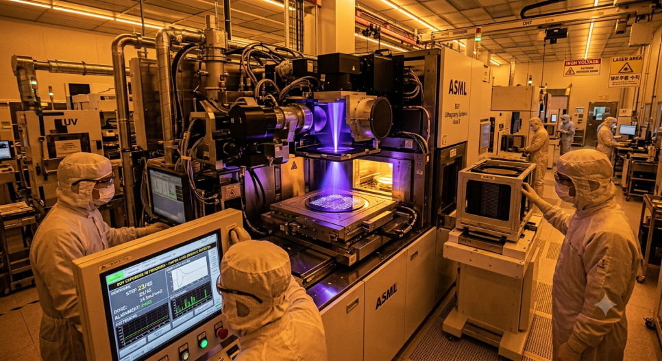

표지
중국이 만들었다는
2008년 모델
쇼크라는 기사에 ASML이 하루 −5.7%. 진짜인지 따져봤다.
반도체 · 노광기
“중국발 DUV 쇼크”에 ASML 주가가 하루 5.7% 빠졌습니다. 그런데 양산한다는 장비를 뜯어보면 ASML의 2008년 모델입니다.
쇼크라는 기사에 ASML이 하루 −5.7%. 진짜인지 따져봤다.
06–10반도체 8개 공정 중 노광이 핵심이다. 웨이퍼 위에 빛으로 회로를 새기는 단계다.
전체 생산시간의 60%, 비용의 35%를 잡아먹는다.설계도이자 반도체 그 자체가 만들어지는 단계.
15–25진공에서 움직이는 미세한 주석 알갱이를 레이저로 맞춰 초당 5만 번 플라스마로 만드는 기계다.
정작 ASML이 직접 만드는 부품은 15%뿐 — 독일 광학, 미국 광원, 일본 부품이 합쳐진다.1997년 인텔이 일본(캐논·니콘)에 의존하기 싫어 중립국 네덜란드 기업을 택했다. ASML이 미국 요구를 무시 못 하는 이유다.
30–36부도난 HSMC를 정부가 인수해 화웨이에 넘겼는데, 거기에 포장도 안 뜯은 ASML 1980Di가 있었다.
이번 개발 주체인 상하이 위량성은 화웨이 엔지니어들이 대거 포진한 정부지원 스타트업이다.역설계했다는 이야기가 나오는 배경.
38–462025년 10월, 중국이 ASML에 수리를 요청했다. 기사가 가보니 분해해놓고 조립에 실패한 상태였다.
노광기는 광원·렌즈·받침대가 나노미터 단위로 정렬돼 있고, 공장에서 몇 주에 걸쳐 맞춘 세팅이다. 뜯는 순간 어긋난다.게다가 소프트웨어 잠금장치가 걸려 있어, 되돌리려면 ASML만 가진 키와 절차가 필요하다.
47, 59–641980Di 복제에 실패하고 구형인 1950i를 만든 수준이다.
1980Di는 2015년 모델, 1950i는 2008년 모델이다.
ASML이 28나노급 1950i에서 7나노급 1980Di로 가는 데 7년이 걸렸다.
50–55광원은 국산화했지만 6kHz·60W로 ASML의 90W에 못 미친다.
렌즈는 검증을 통과했지만 정밀도가 30nm급으로, 독일 자이스의 10nm 미만에 못 미쳐 결국 자이스 렌즈를 수입해 만들었다.
65–73중국은 EUV가 2019년부터 봉쇄됐고, 2024년 9월엔 1980i까지 수입이 막혔다. 기존 장비의 성능 개선·유지보수도 1% 상한으로 묶였다.
규제 임박을 알고 1980i 90대를 사재기했지만 손볼 수가 없다.한 세대 낮더라도 국산으로 내놓자는 판단. 국산화율 70%는 뒤집으면 30%는 여전히 수입이라는 뜻이다.
“신상인 EUV는 꿈도 꾸지 못하고, 2015년 모델인 1980Di도 시간이 많이 필요할 것 같음. 1980Di를 분해하고 재조립에 실패해서 ASML에게 수리를 요청한 것이 2025년 10월임. 아직은 시간이 꽤 필요한 상황 같음.”
2026년 7월 27일, “상하이의 한 기업이 침지 DUV 노광장비를 만들기 시작했다”는 기사가 나왔습니다. 시장은 즉각 반응했죠. ASML 주가가 하루 5.7%(장중 7%) 밀렸고 반도체 장비주도 같이 빠졌습니다. 이게 진짜인지 따져볼 필요가 있습니다.
반도체를 만들려면 웨이퍼·산화·노광·패키징 등 8개 단계를 거치는데, 가장 중요한 게 노광입니다. 실리콘 웨이퍼 위에 회로를 빛으로 새기는 단계로, 설계도이자 반도체 그 자체가 만들어지는 과정이죠. 전체 생산시간의 60%, 비용의 35%가 여기서 나갑니다.

흥미로운 건 ASML이 이 기계의 부품 중 직접 만드는 게 15% 정도라는 점입니다. 독일의 광학기술, 미국의 광원기술, 일본 부품이 합쳐져 완성됩니다. 그리고 이 조립 구조에는 역사가 있습니다.
1997년 인텔이 극자외선 노광기 개발에 투자하기로 하면서 협력업체를 찾았는데, 당시 장비 강자는 일본의 캐논과 니콘이었습니다. 일본 업체들과 경쟁하던 인텔은 핵심 장비를 일본에 의존하고 싶지 않았고, 미·일 반도체 전쟁에서 중립이던 네덜란드 기업 ASML이 대안으로 선택됐습니다. ASML이 네덜란드 기업이면서도 미국 정부의 요구를 무시할 수 없는 이유가 이겁니다.
우한의 HSMC는 중국 최초로 7나노 이하 시스템반도체를 만들겠다며 주목받았지만 자금난으로 부도가 났습니다. 중국 정부가 이를 인수해 화웨이에 넘겼는데, HSMC에는 포장도 뜯지 않은 ASML 1980Di 노광기가 있었습니다.
이번에 개발했다는 장비의 주체인 상하이 위량성은 화웨이 엔지니어들이 대거 포진한 정부지원 스타트업입니다. 화웨이가 확보한 그 1980Di를 역설계했다는 이야기가 나오는 배경이죠.
2025년 10월, 중국은 ASML에 DUV 수리를 요청합니다. ASML 기사가 현장에 가보니 장비를 분해해놓고 조립에 실패한 상태였다고 합니다.
노광기는 단순 분해·재조립도 어려운 기계입니다. 광원·렌즈·웨이퍼 받침대가 나노미터 단위로 정렬돼 있어야 회로가 제대로 새겨지는데, 이 세팅은 공장에서 특수 장비와 수백 개 기준점을 잡아가며 몇 주에 걸쳐 맞춘 겁니다. 뜯는 순간 렌즈와 거울의 정렬이 어긋나죠.
결국 1980Di 복제에는 실패하고, 구형인 1950i를 만든 수준입니다. 여기서 연도가 중요합니다. 1980Di는 2015년 모델, 1950i는 2008년 모델입니다. 이번에 양산한다는 건 EUV가 아니라 DUV이고, 그중에서도 2008년 사양이라는 뜻이죠.
참고로 ASML이 28나노급 1950i에서 7나노급 1980Di로 가는 데 7년이 걸렸습니다. 중국은 지금 DUV 제조 능력 면에서 ASML의 2008년 수준에 와 있는 겁니다.
부품도 아직 벽이 있습니다. 광원은 자체 제작에 성공했지만 6kHz·60W로 ASML의 90W에 못 미치고, 렌즈는 검증을 통과했지만 정밀도가 30nm급이라 독일 자이스의 10nm 미만에 못 미쳐 결국 자이스 렌즈를 수입해 만들었다고 합니다.
중국은 EUV가 2019년부터 봉쇄됐고, 2023년 말부터 상위 모델, 2024년 9월엔 1970i·1980i까지 수입이 막혔습니다. 더 아픈 건 신규 판매만이 아니라 기존 장비의 성능을 1% 이상 개선해주는 것도 금지됐다는 점입니다.
규제가 임박한 걸 알고 2023년 9월부터 1년간 1980i를 90대 사재기했지만, 서비스 규제 때문에 성능 개선도 부품 교체도 유지보수도 어려운 상황이 됐습니다. 한 세대 낮더라도 손볼 수 있는 국산 장비를 내놓자는 판단이 나온 배경입니다.
이건 개별 스타트업의 성과가 아닙니다. SMEE가 화웨이·SMIC와 기술혁신 연합체를 구성하고, 선전의 SiCarrier가 부품사들을 규합했습니다. 국가 역량이 집중되고 있는 건 분명합니다. 다만 국산화율 70%라는 숫자는 뒤집으면 핵심 30%는 여전히 수입해야 만들 수 있다는 뜻이기도 합니다.
“중국이 개발했다는 DUV는 ASML의 2008년 모델인 1950i와 비슷한 성능임. 광원과 렌즈 등 주요 부품이 미국과 독일 정품에 비해 성능이 떨어지니 어쩔 수 없는 선택으로 보임.
“신상인 EUV는 꿈도 꾸지 못하고, 2015년 모델인 1980Di도 시간이 많이 필요할 것 같음. 아직은 시간이 꽤 필요한 상황 같음.”